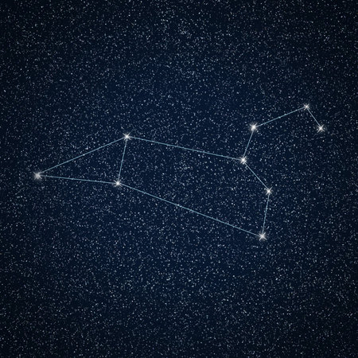
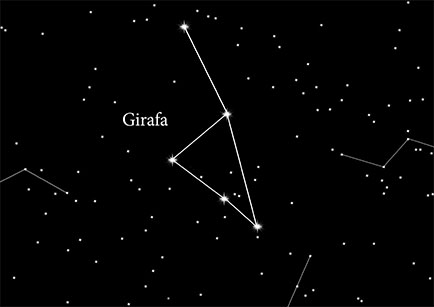

Constelações


style="width: 70%; padding: 2px; margin-top: 5%;margin-left: 15%; font-size: 40px; font-family: fantasy;background-color: #324b8f; color: #1b1b1b; text-align: center;">
Curiosidades
h1>